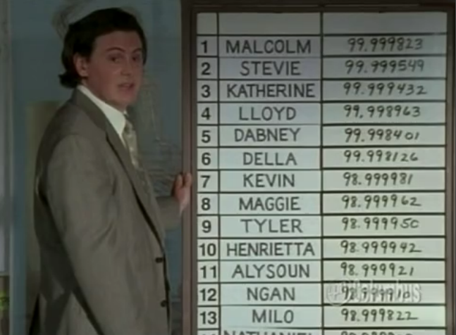

Competitors must earn statuses.
niplav's High Status Eschews Quantification of Performance describes and expands on an observation made by Oliver Habryka (quote is niplav's, not Habryka's):
If you have a community with high status people, and try to introduce clearer metrics of performance into that community, high status individuals in the community will strongly resist those metrics because they have an asymmetric downside: If they perform well on the metric, they stay in their position, but if they perform poorly, they might lose status. Since they are at least a little bit unsure about their performance on the metric relative to others, they can only lose.
While talking with some like-minded people about the post, we stumbled upon the idea of a mechanism that forces competitors in a space to continually earn their status through some type of metric.
Progression curves, or skill gain curves, are logarithmic and functions of skill, meaning going from 98th to 99th percentile takes longer than going from 97th to 98th takes longer than 96th to 97th.
Skill loss curves are inverted skill gain curves, or exponential functions, and functions of skill, meaning going from 99th percentile to 98th percentile happens faster than going from 98th 97th. In other words, losing skill at higher levels happens significantly faster than lower levels.
Keeping high-level skills honed and sharp requires consistent practice and refinement—missing even one session in certain fields can negatively impact difficult skills, whereas simple skills virtually never regress. For example, Nicholi Rogatkin will likely be able to do a simple backflip (low level) for the rest of his life, but his 1440 (high level) ability will quickly regress if he doesn't practice it regularly.
Top spots in highly competitive spaces are constantly shifting due to a) the high level of competition between players (obviously), and b) just how close skill levels are between players. If everyone is within a few decimal places of one another, all it takes is are a few poor and a few stellar performances for rankings to shift dramatically. By this, more accurate rankings require higher frequencies of testing (testing can be performed in a formal setting or sampled from a performance). Players abstaining from quantification are given a hefty default loss that is based on the approximate average other players' skill loss curves.
This is arguably beneficial in that it promotes competitiveness and ensures top players continue to work on their skills at all times in order to maintain their rank. The space will continue to progress because of this (or lapse into decay because everyone is getting burnt out trying to out-compete and sabotage each other).
All parties, or at least the ones in power, must buy into adoption if the system is not established upon creation. This is the biggest hurdle to get over. As niplav and Habryka explain, what sane highly-ranked person would implement something like this when they have little to gain and lots to lose? This change benefits hard workers who aren't highly ranked the most, but they often don't hold the power to push changes like this through the organization's system.
How to incentivize adoption? There's no easy path, but a couple of ideas:
Brendan Long brings up a valid point about quantification efforts getting Goodharted:
I don't think this is just about status. There's also issues around choosing the metric and Goodhearting [sic]. I work in software development, and it would be really nice if we could just measure a single thing and know how effective engineers are, but every metric we've thought of is easy to game. You could say you plan to start measuring lines of code written and won't use it in performance reviews, but the only sane thing for an engineer to do would be to start gaming the metric immediately since lines-of-code is correlated with performance and how long will management resist the temptation use the metric?
It seems like academia has a similar problem, where publications are measurable and gameable, and if we could somehow stop measuring publications it would make the field better.
Metrics that are Goodhart-able should be avoided—only metrics that provide real value should be used (e.g., a employee implementing a cost savings project that is accurately reflected on the books).
There's no formal expression that can be formed, but some general rules based on the above considerations can be established to allow specific application to different spaces.
Put mathematically:
\[f_{\text{test}} \propto C\]Where competitiveness can be indirectly quantified in a few ways:
If a player does not submit to testing, they will be subjected to a default skill loss based on others at or near said skill level, where \(p\) is the number of players in the relevant population, \(s_{l,t,n}\) is the skill loss per unit time for player \(n\) (i.e., if player \(n\) doesn't practice for \(t\) time, what is their skill loss between the two tested time periods?):
\[\text{loss} = \frac{\sum_{n=1}^{p} s_{l,t,n}}{p}\]The relevant population is defined as anyone within plus or minus two percentiles of the player in question.